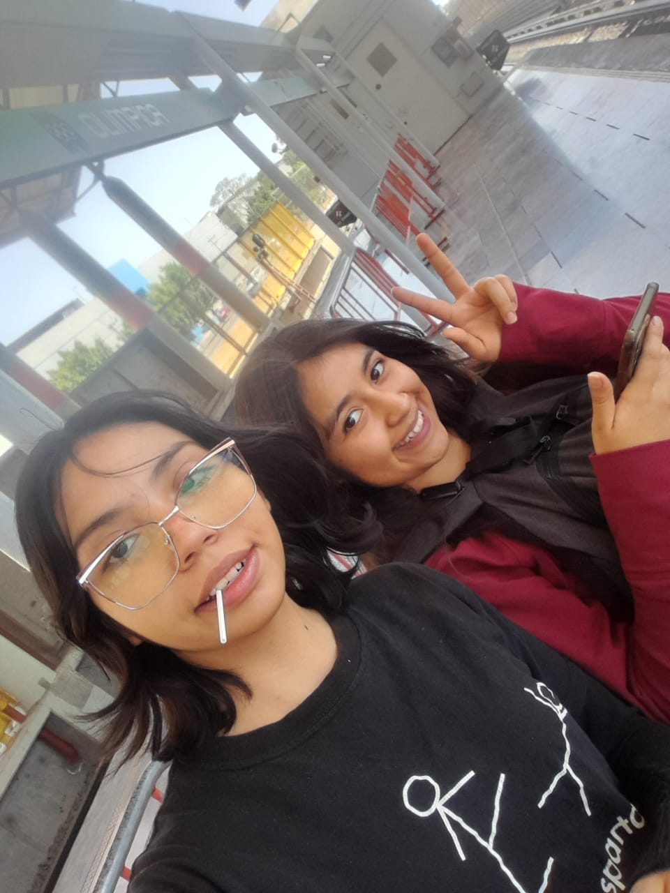
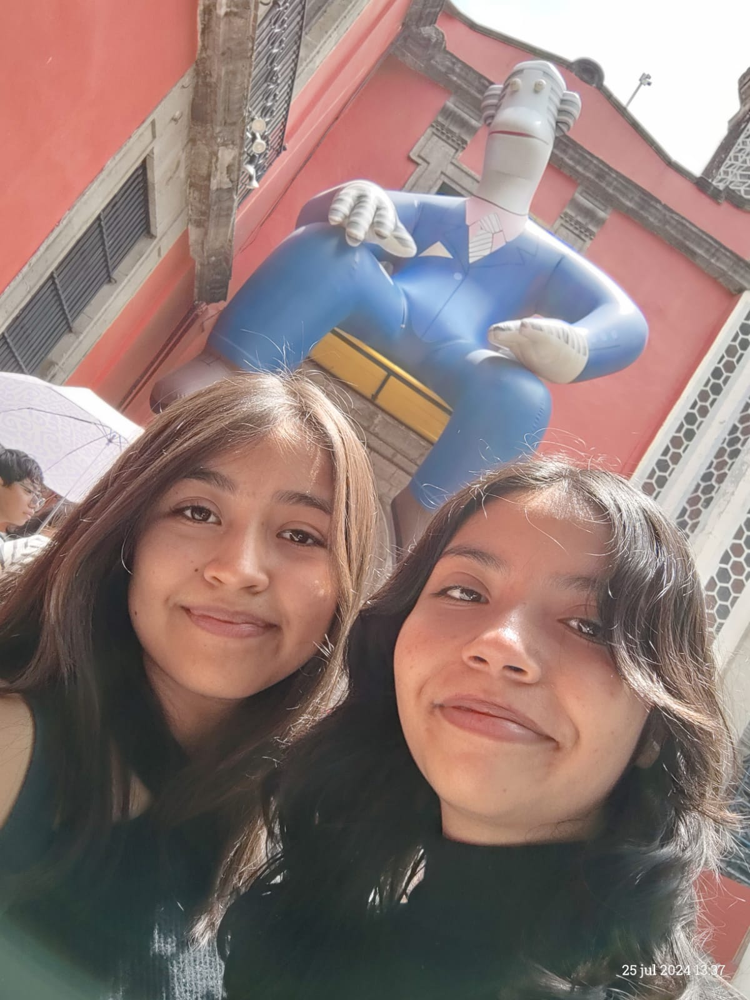

AMIGOS
Emily
Conoci a Emily en la escuela secundaria, y ahora las dos estudiamos en el CECyT 3. Es alegre y siempre rie mucho, le gusta el yogurt y tiene un perro que se llama
Maximus, pero le gustan mas los gatos y tiene una aficion por Harry Potter.
Ibamos en el taller de informatica, y nunca haciamos nada pero sorprendentemente siempre pasabamos con 10. Despues de la escuela se va a colar a mi casa, parece que vive ahi,
pero me agrada, la vida seria mejor si ella se vuelve millonaria y compra una casa en Alaska para vivir juntas con 7 gatos. Ella es creativa y aunque no le vaya bien siempre trata de estar feliz, eso es admirable. Se que no pude haber encontrado una amiga mejor que ella.


Daniela
Dani es una amiga de la secundaria que quiero mucho, y por alguna razon siempre le pasa algo malo, es de las personas con mas mala suerte que he conocido, siempre tiene algo nuevo para contar,
ella tiene 12 gatos que pareciera que cada dia recoge uno de un color distinto. A ella le gusta una banda de k pop con la que esta obsecionada y tiene el delirio de casarse con uno de sus integrantes.
es una persona muy alegre y muy afectuosa, yo se que ella es inteligente y que puede lograr lo que se proponga espero que ella tambien lo sepa.